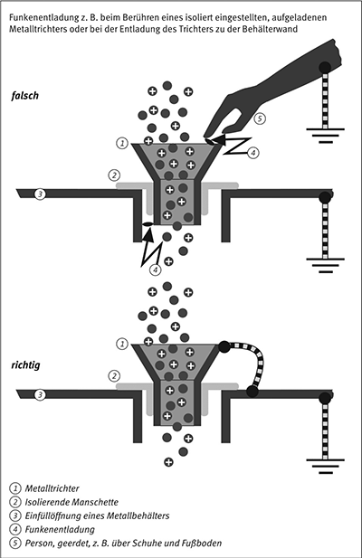
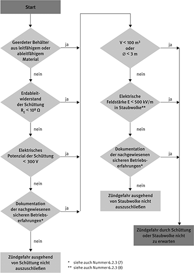
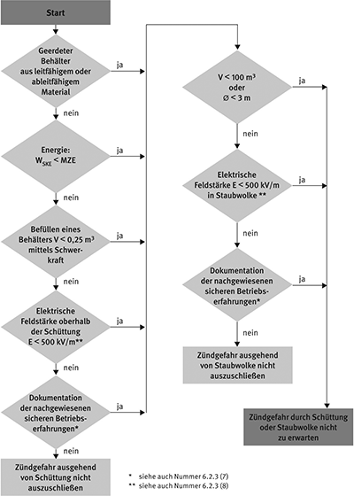
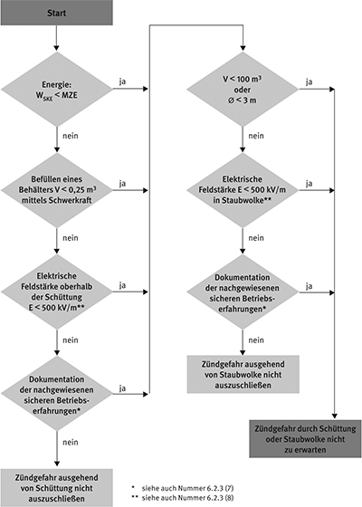
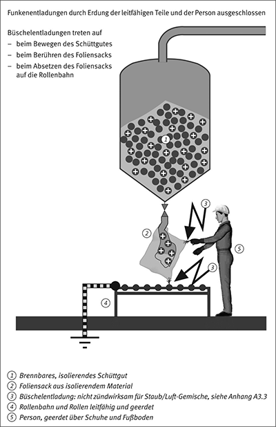
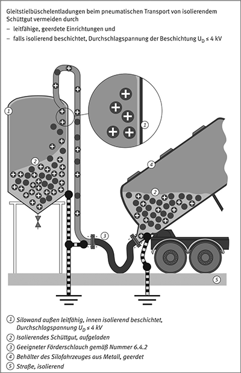
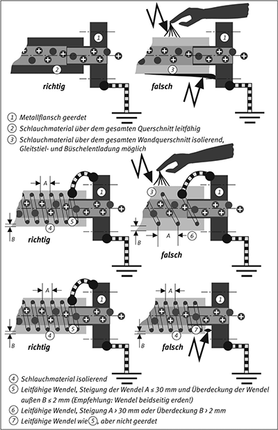
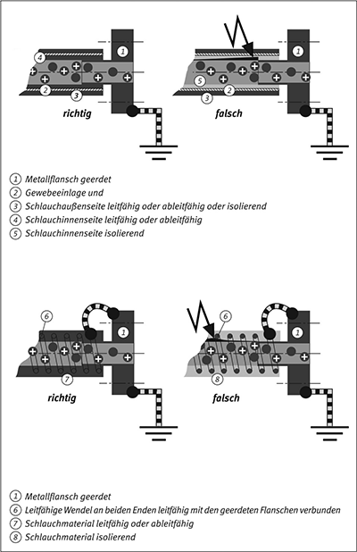

(1) Die Zündempflichkeit des Schüttgutes, das von feinem Staub über Grieß und Granulat bis hin zu Spänen reichen kann, steigt erfahrungsgemäß mit abnehmender Korngröße, Mindestzündenergie (MZE) bzw. Mindestzündladung (MZQ) an.
(2) Für die Beurteilung der Zündempfindlichkeit ist die MZE der feinsten auftretenden Partikelfraktion zu Grunde zu legen.
Hinweis:
Diese Fraktion erhält man in der Regel durch Sieben einer Probe durch ein 63-μm-Sieb.
(3) Beträgt die MZE mehr als 1 J und liegen keine brennbaren Gase und Dämpfe vor, sind besondere Maßnahmen zur Vermeidung der Zündgefahr infolge elektrostatischer Aufladungen nicht erforderlich.
Hinweis:
Eventuell sind Maßnahmen zur Minderung der Gefahr eines elektrischen Schlags angezeigt; siehe auch Anhang D.
(4) Schüttgüter werden nach ihrem spezifischen Widerstand ρ in drei Gruppen eingeteilt:
Hinweis 1:
Der spezifische Widerstand eines Schüttgutes wird in der Regel an einer Schüttung bekannter Höhe in einem zylindrischen Gefäß (Ø 50 bis 80 mm) mit isolierendem Mantel bestimmt. Der Boden und ein Stempel dienen als Elektroden. Der Stempel wiegt ca. 1 kg. Die Messspannung beträgt in der Regel 100 V.
Hinweis 2:
Zur Veranschaulichung der Begriffe siehe auch Anhang I.
Hinweis 3:
In der Praxis kommen Schüttgüter mit einem niedrigen spezifischen Widerstand selten vor. Selbst Metallpulver bleiben nicht sehr lange leitfähig, da sich Oxidschichten an der Oberfläche bilden, die den Widerstand erhöhen.
Hinweis 4:
Beim Umgang mit Schüttgut muss erfahrungsgemäß mit elektrostatischen Aufladungen gerechnet werden. Neben Maßnahmen, gefährlich hohe Ladungsansammlungen zu vermeiden, sind gegebenenfalls zusätzliche Explosionsschutzmaßnahmen, z. B. Inertisierung, Explosionsunterdrückung oder Explosionsdruckentlastung, zu treffen oder es ist eine explosionsfeste Bauweise für den maximal zu erwartenden Explosionsdruck zu wählen.
Die Randbedingungen sind so zu wählen, dass keine gefährlichen elektrostatischen Aufladungen erzeugt werden. Dazu gehören:
(1) Wird die Befeuchtung als Maßnahme zum Ableiten der Ladungen von Schüttgut gewählt, werden in der Regel mindestens 70 % relative Feuchte bei 23 °C benötigt.
(2) Die Befeuchtung ist keine geeignete Maßnahme für das Ableiten von Ladungen bei stark ladungserzeugenden Prozessen – wie der Flugförderung – und keine bei warmen Produkten.
Hinweis:
Luft ist ein schlechter Leiter für Elektrizität. Erhöhen der Luftfeuchte eignet sich nicht als Maßnahme zum Ableiten der Ladung aus einer Staubwolke. Eine hohe Feuchte verringert jedoch den spezifischen Widerstand vieler Schüttgüter (mit Ausnahme der meisten Polymere), wodurch der Ladungsabbau in abgelagerten Schüttgütern beschleunigt werden kann.
(1) Die Leitfähigkeit eines Staub/Luft-Gemisches lässt sich durch Ionisieren erhöhen. Ionisierung kann auch geeignet sein, gefährliche Staubablagerungen zu verringern.
(2) Ionisierung ist ungeeignet, gefährliche Aufladungen an größeren Schüttgutmengen oder großen Staubwolken zu vermeiden.
Hinweis:
Es ist schwierig, die erforderliche Ionisierung für ein relativ großes Volumen von mehr als 100 l aufzubringen. Außerdem ist die zu neutralisierende Gesamtladung oft größer als die Ladung, die durch ein Ionisierungssystem abgegeben werden kann.
(3) Die elektrische Ladung bereits aufgeladener Staubwolken oder Schüttgutschüttungen kann durch geerdete Spitzen oder Drähte örtlich herabgesetzt werden, wenn die elektrische Feldstärke bereits nahe der Durchbruchfeldstärke liegt.
Hinweis:
An der Auftreffstelle des Schüttgutes angeordnete Spitzen oder Drähte können die Energie einzelner Entladungen auf ein niedriges Niveau reduzieren. Sie können außerdem angesammelte Ladungen sicher zur Erde ableiten, wenn das Schüttgut in einen isolierenden Behälter eintritt.
(4) Die verwendeten Spitzen oder Drähte sind so zu wählen, dass weder sie noch Teile von ihnen abbrechen können.
Hinweis:
Abgebrochene Teile können wie aufgeladene Kondensatoren wirken und Funkenentladungen verursachen.
Von Abwesenheit brennbarer Gase und Dämpfe wird im Sinne dieser Technischen Regel auch dann ausgegangen, wenn
Hinweis:
Diese Bedingung ist oft erfüllt, wenn z. B. unmittelbar nach einem Trocknungsprozess der restliche Anteil eines brennbaren Lösemittels weniger als 0,5 Gew.-% des Schüttgutes beträgt.
(1) In explosionsgefährdeten Bereichen sind alle Gegenstände und Einrichtungen, die aus leitfähigen und ableitfähigen Materialien gefertigt sind, gemäß Nummer 8 zu erden.
Hinweis:
Hierzu zählen leitfähig kaschierte Packmittel und viele Arten ortsbeweglicher beschichteter Behälter, z. B. aluminiumbeschichtete.
(2) Unter den folgenden Umständen kann auf eine Erdung verzichtet werden:

Beispiel 8: Funkenentladungen an einem isolierenden Metalltrichter
(1) Isolierende Gegenstände oder Einrichtungen sind nur zulässig, wenn keine gefährlichen Aufladungen zu erwarten sind.
(2) Werden Gegenstände oder Einrichtungen aus isolierenden materialien verwendet, z. B. Rohre, Schläuche, Behälter,Folien, Beschichtungen oder Einstellsäcke, ist mit Aufladungen zu rechnen. Mit gefährlichen Aufladungen ist erfahrungsgemäß erst beim Vorhandensein stark ladungserzeugender Prozesse zu rechnen.
Hinweis 1:
Der pneumatische Transport von Schüttgütern oder das Abwerfen von Schüttgut über Rohrleitungen, Schüttrinnen, etc. mit einer Fallhöhe von mehr als 3 m stellt einen stark ladungserzeugenden Prozess dar, welcher die Innenwand von isolierenden Rohrleitungen, Schüttrinnen, etc. gefährlich aufladen kann. Wird aufgeladenes Schüttgut in einen isolierenden Behälter, dessen Volumen 0,25 m3 überschreitet, eingefüllt, kann eine gefährliche Aufladung auftreten, siehe dazu auch Nummern 6.2.3.2 und 6.2.3.3.
Hinweis 2:
Aufladungen von isolierenden Oberflächen können zu Gleitstielbüschelentladungen mit typischen Energien von 1 J führen, z. B. an dünnen, isolierenden Schichten oder isolierend beschichteten leitfähigen Rohren oder Schläuchen. Werden isolierende Folien, Schichten oder Beschichtungen mit Durchschlagspannungen UD ≤ 4 kV verwendet, sind keine für Schüttgüter zündwirksamen Aufladungen zu erwarten.
Hinweis 3:
Anforderungen an Rohrleitungen oder Schläuche zur Aspiration oder zum pneumatischen Transport von Schüttgut siehe Nummer 6.4.
(3) Werden in einer Mischbauweise leitfähige, ableitfähige und isolierende Materialien verwendet, ist sicherzustellen, dass alle leitfähigen und ableitfähigen Teile geerdet bzw. mit Erde verbunden sind.
Hinweis:
Aufladungen an isolierten Leitern können zu Funkenentladungen führen.
(1) Anhand der Ablaufdiagramme 1 bis 3 auf den folgenden Seiten kann geprüft werden, ob das Schüttgut beim Befüllen von Behältern gefährlich aufgeladen werden kann. Gegebenenfalls sind Maßnahmen gegen Schüttkegelentladungen (SKE), gewitterblitzartige Entladungen oder Funkenentladungen zu treffen.
(2) Schüttgüter und Schüttgutbehälter sind so zu handhaben bzw. zu betreiben, dass gefährliche Aufladungen vermieden werden. Gefährliche Aufladungen können sowohl auf dem Schüttgut als auch auf dem Schüttgutbehälter angesammelt werden.
Hinweis 1:
Als Schüttgutbehälter werden neben großen Behältern oder Silos auch ortsbewegliche Behälter, z. B. Gebinde, Fässer, Säcke, flexible Schüttgutbehälter (FIBC) oder andere Packmittel, verstanden. Zu FIBC siehe auch Nummer 6.6 und Anhang C.
Hinweis 2:
Anforderungen an Rohrleitungen oder Schläuche zur Aspiration oder zum pneumatischen Transport von Schüttgut siehe Nummer 6.4.
(3) Je nach spezifischem Widerstand ρ des Schüttgutes trifft eines der drei Ablaufdiagramme zu:
| Ablaufdiagramm 1: | ρ ≤ 106 Ωm | ||
| Ablaufdiagramm 2: | 106 Ωm | < | ρ ≤ 1010 Ωm |
| Ablaufdiagramm 3: | 1010 Ωm | < | ρ |
Hinweis:
In den Ablaufdiagrammen 2 und 3 bedeutet WSKE die maximale zu erwartende Äquivalentenergie der Schüttkegelentladung (siehe auch Anhang A3.6).
(4) Zur Beurteilung der Aufladung verschiedener Schüttgutbehälter sind zusätzlich die Nummern 6.2.3.1 bis 6.2.3.4 zu beachten.
(5) Beim Entleeren von Behältern mittels Schwerkraft sind bei Abwesenheit brennbarer Gase und Dämpfe in der Regel im zu entleerenden Behälter keine gefährlichen Aufladungen des Schüttgutes zu erwarten.
Hinweis:
Siehe auch Nummer 6.3. Zu beachten ist, dass jeder Entleervorgang für das schüttgutaufnehmende System einen Befüllvorgang darstellt, auf den die Beurteilungskriterien der Ablaufdiagramme 1 bis 3 anzuwenden sind.
(6) Leitfähige und ableitfähige Behälter müssen beim Befüllen und Entleeren geerdet bzw. mit Erde verbunden sein.
(7) Soll gemäß einem der Ablaufdiagramme 1 bis 3 die Zündgefahr auf Grund des Entscheidungsschrittes „Dokumentation der nachgewiesenen sicheren Betriebserfahrungen“ ausgeschlossen werden, muss die Explosionsgefährdung ermittelt und einer Bewertung unterzogen worden sein. Die entsprechenden Begründungen sind im Explosionsschutzdokument darzulegen.
Hinweis:
Zum Explosionsschutzdokument siehe auch § 6 Absatz 9 der Gefahrstoffverordnung.
(8) Als Alternative zu Feldstärkemessungen vor Ort können auch Modellrechnungen durchgeführt werden (siehe dazu auch Anhang A3.6).



6.2.3.1 Leitfähige und ableitfähige Behälter mit leitfähigen oder ableitfähigen Einstellsäcken
(1) Zusätzlich zu den Maßnahmen nach Nummer 6.2.3 dürfen leitfähige und ableitfähige Einstellsäcke in explosionsgefährdeten Bereichen nur benutzt werden, wenn sie sicher geerdet sind und beim Einstellen und Herausnehmen geerdet bleiben, z. B. indem sie mit dem Behälter fest verbunden und beim Ein- und Ausstellen über die Person geerdet bleiben.
(2) Das Einstellen und Herausnehmen der Säcke muss anderenfalls außerhalb der Zonen 20 und 21 erfolgen.
6.2.3.2 Leitfähige und ableitfähige Behälter mit isolierenden Einstellsäcken
(1) Isolierende Einstellsäcke sollen grundsätzlich vermieden werden.
Hinweis:
Gleitstielbüschelentladungen können je nach Dicke, spezifischem Widerstand des Einstellsacks, seiner Durchschlagspannung und den elektrischen Eigenschaften des Füllgutes auftreten.
(2) Sind isolierende Einstellsäcke nicht zu vermeiden, muss zusätzlich zu den Maßnahmen nach Nummer 6.2.3 mindestens eine der folgenden Bedingungen erfüllt sein:
(3) Beträgt der spezifische Widerstand des Schüttguts weniger als 106 Ωm, ist es zu erden.
Hinweis:
Die Erdung kann z. B. durch eine oder mehrere vertikale Metallstange(n) oder ein in den Behälter führendes Metallfüllrohr erfolgen. Rohr und Stangen sind vor dem brennbaren Schüttgut und nicht nachträglich einzubringen.
6.2.3.3 Isolierende Behälter
(1) Isolierende Behälter dürfen nur eingesetzt werden, wenn dies aus zwingenden Gründen erforderlich ist.
(2) Füllgut mit einem spezifischen Widerstand ρ < 106 Ωm ist zu erden.
Hinweis:
Die Erdung kann z. B. wie in Nummer 6.2.3.2 (3) beschrieben erfolgen.
(3) Isolierende Behälter können verwendet werden, wenn zusätzlich zu den Maßnahmen nach Nummer 6.2.3 mindestens eine der folgenden Bedingungen erfüllt ist:
6.2.3.4 Isolierende Behälter mit Einstellsäcken
(1) Leitfähige Einstellsäcke sollen in isolierenden Behältern vermieden werden. Ist ihr Einsatz unverzichtbar, sind sie sicher zu erden.
(2) Isolierende Einstellsäcke in isolierenden Behältern sind so zu beurteilen wie isolierende Behälter nach Nummer 6.2.3.3.

Bei Anwesenheit brennbarer Gase oder Dämpfe muss je nach ihrer Konzentration mit der Entzündung einer explosionsfähigen Gas- oder Dampfatmosphäre oder mit der Entzündung eines so genannten hybriden Gemisches (Gemisch aus brennbaren Gasen oder Dämpfen und brennbaren Stäuben mit Luft) gerechnet werden. Die Mindestzündenergie (MZE) wird wesentlich durch anwesende gas- oder dampfförmige Komponenten bestimmt und liegt meist niedriger als die MZE des reinen Staubes.
Hinweis:
Anstelle der Eigenschaften niedriger, mittlerer oder hoher spezifischer Widerstand von Schüttgütern genügt im Folgenden die Unterscheidung des spezifischen Widerstandes an der Grenze 108 Ωm.
(1) Die offene Handhabung von lösemittelfeuchten Schüttgütern mit einem spezifischen Widerstand ρ ≥ 108 Ωm ist zu vermeiden.
Hinweis:
Die Handhabung von Schüttgütern mit einem spezifischen Widerstand ρ ≥ 108 Ωm erzeugt in der Regel hohe elektrostatische Aufladungen, so dass Büschelentladungen nicht sicher vermieden werden können. Die Entzündung des gefährlichen explosionsfähigen Gemisches ist deshalb möglich.
(2) In diesen Fällen sind zusätzliche Maßnahmen des Explosionsschutzes notwendig. Ggf. ist die Gefährdungsbeurteilung im Hinblick auf die Vermeidung gefährlicher explosionsfähiger Gemische, z. B. durch Inertisierungsmaßnahmen oder Vermeiden des hybriden Gemisches, zu wiederholen. Weitere Maßnahmen sind Arbeiten im Vakuum oder in druckfesten Behältern oder Abkühlen deutlich unter die Temperatur des Flammpunktes.
6.3.2 Maßnahmen bei spezifischem Widerstand ρ < 108 Ωm
Ist der spezifische Widerstand des Schüttgutes ρ < 108 Ωm, z. B. bei Schüttgütern, die ein polares Lösemittel enthalten, muss die Handhabung in leitfähigen geerdeten Anlagen erfolgen.
Hinweis:
Bei größeren Schüttgutmengen ist eine repräsentative Probenahme zur Beurteilung des spezifischen Widerstandes notwendig. Anstelle des spezifischen Widerstandes kann auch die Bestimmung der Feuchte im Schüttgut aussagefähig sein. Sowohl das Schüttgut als auch die brennbare Flüssigkeit können durch den Eintrag in den Behälter oder durch die Zugabe in die Flüssigkeit gefährlich aufgeladen werden.
6.3.3 Eintrag von Schüttgut in Behälter mit brennbaren Gasen oder Dämpfen
(1) Der Eintrag von Schüttgut in einen Behälter, der brennbare Gase oder Dämpfe enthält, soll möglichst in einem geschlossenen System und unter Inertgas erfolgen. Der offene Eintrag von Schüttgut ist zu vermeiden.
Hinweis 1:
Elektrostatische Aufladungen beim Eintrag von Schüttgut aus Metall- oder Kunststofffässern oder aus Kunststoffsäcken in brennbare Flüssigkeiten verursachten bislang zahlreiche Brände und Explosionen.
Hinweis 2:
Elektrostatische Aufladungen werden erzeugt, wenn das Schüttgut aus einem Behälter geschüttet oder über eine Rutsche in den Sammelbehälter fließt.
Hinweis 3:
Sofern keine Maßnahmen ergriffen werden, können sich gefährlich hohe Potenziale am Behälter während des Entleerens, an einem Einstellsack im Behälter, am Sammelbehälter, an der Laderutsche, am Schüttgutstrom, am Produkt im Sammelbehälter sowie an Personen, die mit der Handhabung und Bedienung befasst sind, aufbauen.
(2) Lässt sich der offene Eintrag von Schüttgut in eine explosionsfähige Atmosphäre nicht vermeiden, sind besondere Maßnahmen vorzusehen, welche die Aufladungen auf ein ungefährliches Maß begrenzen:
Hinweis 1:
Schüttgutbehälter oder Packmittel aus ableitfähigen Materialien können z. B. aus Metall, Papier oder ableitfähigen Verbundmaterialien bestehen. Zu ihnen zählen z. B. auch Packmittel aus kunststoffkaschiertem Papier.
Hinweis 2:
Bei Packmitteln aus ableitfähigen Materialien, z. B. Papiersäcken, kann ein ausreichender Erdkontakt über die Person durch Anfassen erreicht werden. Bei diesem Vorgehen ist unverzichtbar, dass die Ableitfähigkeit des Fußbodens, des Schuhwerkes sowie der Handschuhe gegeben ist und nicht durch Verschmutzungen herabgesetzt wird.
Hinweis 3:
Bei der Lagerung ist zu beachten, dass die Ableitfähigkeit der Verpackung nicht verloren geht, z. B. durch sehr trockene Lagerung.
| a) | die Beschichtung bzw. die produktberührende Lage dünner als 2 mm ist und |
| b) | die Beschichtung bzw. die produktberührende Lage beim Leeren mit dem Behälter verbunden bleibt und |
| c) | das Packmittel Erdkontakt besitzt. |
(3) Entsteht durch Zugabe eines Schüttgutes in eine Vorlage eine Suspension oder Emulsion – eventuell auch nur kurzzeitig – so ist zu beachten, dass z. B. beim Rühren unabhängig vom eigentlichen Schüttvorgang eine gefährliche Aufladung im Gefäß erzeugt werden kann. In diesen Fällen ist Nummer 4.11 zu beachten.
Hinweis:
Ein typisches Beispiel ist die Zugabe von Pigmenten bei der Herstellung einiger Farben und Lacke.
Beim Transport von Schüttgütern durch Rohre und Schläuche können sich sowohl das Schüttgut als auch die Rohre und Schläuche aufladen. Die Höhe der Aufladung hängt von den Stoff- und Materialeigenschaften sowie den Förderbedingungen ab. Je nach Aufbau und Widerstand des Wandmaterials können Korona-, Büschel-, Funken- und Gleitstielbüschelentladungen auftreten. Diese Entladungen können eine Zündgefahr sowohl für das transportierte Schüttgut, als auch für die Umgebung der Rohre und Schläuche darstellen.
Rohre und Schläuche können sowohl zur Aspiration als auch zum pneumatischen Transport verwendet werden.
(1) Rohre und Schläuche aus isolierenden Materialien sind zur Aspiration zulässig, wenn nur eine geringe Staubbeladung im Inneren der Schlauchleitung vorliegt und somit nur selten und kurzzeitig mit dem Auftreten gefährlicher explosionsfähiger Staubatmosphäre zu rechnen ist.
(2) Unabhängig von der Wahl des Schlauchmaterials sind alle leitfähigen Teile des Schlauches, z. B. Stützwendeln, Armaturen zu erden.
(3) In Anwesenheit brennbarer Gase oder Dämpfe gelten die Anforderungen gemäß Nummer 6.4.2.
(1) Beim pneumatischen Transport brennbarer Schüttgüter mit Luft ist im Allgemeinen im Inneren der zum Transport benutzten Rohre und Schläuche von explosionsfähiger Atmosphäre durch Feinstaub auszugehen. Je nach Einsatz kann auch in der Umgebung der Rohre und Schläuche explosionsfähige Atmosphäre vorliegen. Dementsprechend werden für die Vermeidung wirksamer Zündquellen an den Wandaufbau der Rohre und Schläuche verschiedene Anforderungen gestellt.
(2) Im Folgenden werden Rohre und Schläuche hinsichtlich ihres Wandaufbaues und der verwendeten Materialien unterschieden. Für eine Charakterisierung des Wandmaterials als leitfähig oder ableitfähig darf entgegen Nummer 2 Absatz 11 bzw. 13 nur der Durchgangswiderstand (spezifische Widerstand) herangezogen werden. Eine Charakterisierung über den Oberflächenwiderstand allein ist nicht zulässig.
Hinweis 1:
Angaben zur Bewertung der Rohre und Schläuche finden sich in Anhang B.
Hinweis 2:
Insbesondere bei Fallhöhen größer 3 m kann auch eine Förderung mittels Schwerkraft einen stark ladungserzeugenden Prozess darstellen. In diesem Fall gelten dieselben Anforderungen wie für den pneumatischen Transport.

6.4.2.1 Rohre und Schläuche mit homogenem leitfähigem Wandmaterial
(1) Bei Rohren und Schläuchen aus homogenem leitfähigem Wandmaterial treten keine Gleitstielbüschelentladungen auf.
(2) Um Funkenentladungen und auch Korona- und Büschelentladungen an Rohren und Schläuchen aus leitfähigem Material zu vermeiden, sind sie wenigstens an einem Ende zu erden und die Länge ist zu begrenzen.
(3) Tabelle 9 zeigt zulässige Längen für verschiedene Wertepaare aus Wandstärke und spezifischem Widerstand des Wandmaterials für Rohre und Schläuche, die an einem Ende geerdet sind. Für an beiden Enden geerdete Rohre und Schläuche gilt der zweifache Wert.
(4) Für Rohre und Schläuche aus Metall liegt die zulässige Rohrlänge bei einer Wandstärke von 1 mm bei mehreren Kilometern.
Tabelle 9: Zulässige Länge von an einem Ende geerdeten Rohren und Schläuchen in Abhängigkeit von der Wandstärke und dem spezifischen Widerstand des Wandmaterials
| Wandstärke (mm) |
zulässige Länge (m) bei einem spezifischen Widerstand (Ωm) von | ||
| 1 | 1 000 | 10 000 | |
| 0,5 | 17 | 0,55 | 0,17 |
| 1 | 24 | 0,77 | 0,24 |
| 2 | 35 | 1,1 | 0,35 |
| 3 | 42 | 1,3 | 0,42 |
| 5 | 55 | 1,7 | 0,55 |
| 8 | 69 | 2,2 | 0,69 |
| 10 | 77 | 2,5 | 0,77 |
6.4.2.2 Rohre und Schläuche aus leitfähigem Wandmaterial mit Drahteinlagen
Werden in eine Schlauch- oder Rohrwand aus leitfähigem Material nicht ummantelte metallische Drähte eingelegt, kann die Leitfähigkeit längs des Schlauches oder Rohres verbessert werden. Wenn der Abstand von jedem Ort der Wand zu den Drähten kleiner ist als die zulässige Länge nach Nummer 6.4.2.1, kann eine Längenbeschränkung entfallen. Die Drahteinlagen sind zu erden.
Hinweis:
Zur Verwendung von ableitfähigem Wandmaterial mit Drahteinlagen siehe Nummer 6.4.2.4.
6.4.2.3 Rohre und Schläuche mit Wänden aus mehreren Schichten
(1) Genügt die produktberührte Schicht Nummer 6.4.2.1 oder 6.4.2.2, treten innen keine Entladungen auf.
(2) Ist die produktberührte Schicht aus einem Material mit einem spezifischen Durchgangswiderstand kleiner als 109 Ω m und einer relativen Permittivität von weniger als 20 und genügt die darauf folgende Schicht den Anforderungen nach Nummer 6.4.2.1 oder 6.4.2.2, treten innen keine Entladungen auf.
(3) Treten außen keine stark ladungserzeugenden Prozesse auf oder besteht die äußerste Schicht aus leitfähigem oder ableitfähigem Material, treten außen keine Entladungen auf.
Hinweis:
Die äußerste Schicht darf isolierend sein, wenn andere Kriterien, z. B. die nach Nummer 3.2.1, anwendbar und erfüllt sind.
(4) Alle leitfähigen Bestandteile der Rohre und Schläuche sind zu erden und alle ableitfähigen Bestandteile der Rohre und Schläuche sind mit Erde in Kontakt zu bringen.
Hinweis:
Die Anforderungen an die Schichten betreffen auch Haftvermittler o. ä. zwischen den Schichten.
6.4.2.4 Stützwendelschläuche
(1) Stützwendelschläuche sind nur für den pneumatischen Transport zulässig, wenn sie alle nachfolgenden Eigenschaften besitzen:
(2) Für andere geometrische Anordnungen, höhere Werte der relativen Permittivität oder für mehrlagige Stützwendelschläuche kann der obere Grenzwert für den zulässigen spezifischen Widerstand des Wandmaterials durch Simulationsrechnungen unter Annahme einer Aufladestromdichte von 1 mA/m2 berechnet werden.


(1) Kompensatoren müssen in explosionsgefährdeten Bereichen so beschaffen sein und betrieben werden, dass sie nicht gefährlich aufgeladen werden. Sie sind möglichst kurz zu halten und so zu gestalten, dass sich möglichst keine Berührung zwischen Kompensator und strömendem Produkt ergibt.
(2) Leitfähige Materialien müssen geerdet sein, ableitfähige müssen mit Erdkontakt versehen sein.
(3) Für Kompensatoren, die beim pneumatischen Transport oder bei der Förderung mittels Schwerkraft mit Fallhöhen größer als 3 m eingesetzt werden, gelten die gleichen Anforderungen wie für Rohre und Schläuche nach Nummer 6.4.2.
(4) Beim Einsatz in Aspirationsleitungen und bei Förderung mittels Schwerkraft bei Fallhöhen bis 3 m sind in Abwesenheit von brennbaren Gasen und Dämpfen in der Regel keine weiteren Maßnahmen erforderlich.
(5) Bei Anwesenheit von brennbaren Gasen und Dämpfen sind beim Einsatz isolierender Materialien zusätzlich Maßnahmen gegen Büschelentladungen nach Nummer 3.2 zu ergreifen.
(1) Filterelemente wie Filterschläuche, -patronen oder -kassetten bestehen i. d. R. aus Filtermaterialien, z. B. Papier, Gewebe oder Sintermaterial, und einer Rahmenkonstruktion.
An Filterelementen in filternden Staubabscheidern kann es zu elektrostatischen Entladungen kommen.
Hinweis 1:
Beim Einsatz von filternden Abscheidern sind mehrere elektrostatische Zündgefahren zu beachten:
Hinweis 2:
Bei Verwendung von Schläuchen und Rohrleitungen zur Förderung von brennbaren Stäuben in Staubabscheider siehe Nummer 6.4.
(2) Alle leitfähigen Teile sind zu erden und alle ableitfähigen Teile der Filterelemente mit ausreichendem Erdkontakt zu versehen.
Hinweis:
In filternden Abscheidern können die Erdverbindungen starken mechanischen Belastungen ausgesetzt sein. Daher ist die Erdung bzw. der ausreichende Erdkontakt wiederkehrend zu prüfen (siehe Nummer 8.7).
(3) Die Verwendung von Filterelementen aus isolierendem Filtermaterial für die Abscheidung von brennbaren Stäuben ist nur zulässig, wenn dadurch die Erdung der leitfähigen oder ableitfähigen Teile des filternden Abscheiders nicht unterbrochen wird.
(4) Bei Schüttgütern mit einer MZE ≤ 3 mJ sind ableitfähige Filtermaterialien mit einem Ableitwiderstand RE ≤ 108 Ω oder leitfähige geerdete Filtermaterialien erforderlich.
Hinweis 1:
Filtermaterialien aus Gewebe (z. B. Nadelfilze oder Vliese), die mit leitfähigen Fasern ausgerüstet sind, gelten als ableitfähig, wenn ihr Streifenwiderstand RST ≤ 108 Ω beträgt.
Hinweis 2:
Stäube können durch Büschelentladungen nicht gezündet werden. Bei den in Abscheidern auftretenden stark ladungserzeugenden Prozessen können jedoch auch sehr kleine isolierte leitfähige Teile so stark aufgeladen werden, dass sie für Stäube geringer Mindestzündenergie zündwirksame Funkenentladungen erzeugen. Beim Einsatz isolierender Filtermaterialien ist es sehr schwierig, sicherzustellen, dass auch kleinste leitfähige Bauteile in die Erdung eingebunden sind.
(5) Bei leitfähigen Schüttgütern ist der Einsatz ableitfähiger Filtermaterialien mit einem Ableitwiderstand RE ≤ 108 Ω oder leitfähiger geerdeter Filtermaterialien erforderlich.
(6) Beim Auftreten hybrider Gemische in filternden Abscheidern ist der Einsatz ableitfähiger Filtermaterialien mit einem Ableitwiderstand RE ≤ 108 Ω oder leitfähiger geerdeter Filtermaterialien erforderlich.
(1) Flexible Schüttgutbehälter werden bei Lagerung und Transport sowie in Produktionsprozessen, z. B. zur Aufnahme von Schüttgütern, Granulaten, verwendet. Elektrische Ladungen können während des Füllens und Entleerens erzeugt werden und sich auf dem Schüttgut selbst oder auf der Oberfläche des FIBC ansammeln. Von aufgeladenen FIBC können durch Influenz Gegenstände oder Personen aufgeladen werden. Insbesondere können auf dem FIBC abgelegte Werkzeuge oder nasse Stellen des Gewebes durch Influenz aufgeladen werden.
(2) Es werden die Typen A, B, C und D unterschieden. Typ A weist keine Schutzmaßnahmen gegen elektrostatische Aufladungen auf. Bei den anderen Typen werden aufgrund verschiedener physikalischer Prinzipien Büschelentladungen (Typ C und D), Gleitstielbüschelentladungen (Typ B, C und D) und Funkenentladungen (Typ B, C und D) vermieden.
Hinweis:
Eigenschaften einzelner Typen sind im Anhang C zusammengestellt.
(3) In explosionsgefährdeten Bereichen erfolgt der Einsatz der FIBC-Typen gemäß nachstehender Tabelle 10. Sie gibt Hinweise auf die geeignete Wahl von FIBC unter Berücksichtigung des zu handhabenden Schüttgutes und der Umgebungsbedingungen.
(4) FIBC Typ A sind für den Einsatz in explosionsgefährdeten Bereichen grundsätzlich nicht geeignet.
(5) In Gegenwart brennbarer Gase, Dämpfe oder Stäube müssen FIBC des Typs C während des Befüllens oder Entleerens geerdet sein.
(6) In der Umgebung von FIBC Typ D müssen in Gegenwart brennbarer Gase, Dämpfe oder Stäube alle Personen und leitfähigen Gegenstände, die gefährlich aufgeladen werden können, geerdet werden.
Hinweis:
Diese Forderung leitet sich aus dem physikalischen Wirkungsprinzip von FIBC des Typs D ab.
(7) Etiketten oder Dokumententaschen usw. an FIBC Typ B, C und D dürfen keine zündwirksamen Entladungen verursachen.
(8) Kommen Einstellsäcke in FIBC zum Einsatz, ist das Packmittel als Ganzes zu bewerten, da die Typeinteilung des Herstellers die Verwendung von Einstellsäcken in der Regel nicht mit abdeckt.
(9) Schüttgut mit einem spezifischen Widerstand der Schüttung von weniger als 106 Ω m darf nur in FIBC eingefüllt oder aus diesen entleert werden, wenn die Erdung des Schüttgutes im FIBC während des Befüllens bzw. Entleerens gewährleistet ist.
Hinweis 1:
Die Erdung des Schüttgutes kann z. B. durch Einstellen eines geerdeten leitfähigen Stabes erfolgen.
Hinweis 2:
Selbst die Verwendung von FIBC Typ C stellt die Erdung des Schüttgutes nicht ohne weitere Maßnahmen sicher. Bei diesem Typ ist eine Durchschlagspannung von bis zu 6 kV zulässig, so dass zündwirksame Funkenentladungen auftreten können, siehe auch Anhang C.
Tabelle 10: Auswahl geeigneter FIBC-Typen in Abhängigkeit von Schüttgut und Einsatzbedingungen
| Mindest- zünd- energie (MZE) des Schütt- gutes |
Befüll- und Entleereinrichtung befindet sich im | |||
| nicht explosions- gefährdeten Bereich |
explosionsgefährdeten Bereich der | |||
| Zone 21 oder 22 |
Zone 2 | Zone 1 | ||
| nicht staubexplosionsfähig oder 1 000 mJ < MZE | A, B, C, D | A4, B4, C, D | C, D | C1, D1 |
| 3 mJ < MZE ≤ 1 000 mJ | B, C, D | B, C, D | C, D | C1, D1 |
| MZE5 ≤ 3 mJ | C, D | C, D | C, D | C1, D1 |
| Staub mit brennbarem Lösemittelanteil3 | C2, D2 | C2, D2 | C2, D2 | C2, D2 |
|
1 beim Befüllen des FIBC nur in Verbindung mit zusätzlichen Maßnahmen, z. B. Spülen mit Luft 2 beim Befüllen und Entleeren des FIBC nur in Verbindung mit zusätzlichen Maßnahmen, z. B. Inertisierung 3 zur Konzentration der Lösemittelanteile siehe auch Nummer 6.2 4 sofern das gehandhabte Schüttgut die Zone bestimmt 5 Die Einschränkung, bei Schüttgut mit MZE ≤ 3 mJ nur FIBC Typ C oder Typ D einzusetzen, beruht auf der Zündwirksamkeit von Schüttkegelentladungen. Diese können in einem FIBC Typ B eine viel höhere Energie besitzen als in einem FIBC Typ C oder Typ D. Im Fall eines FIBC Typ B kann die Schüttkegelenergie bereits für Schüttgut mit einem Medianwert von nur 0,055 mm einen Wert von 3 mJ erreichen. In einem FIBC Typ C oder Typ D muss der Medianwert des Schüttguts bei 0,27 mm oder höher liegen, damit die Schüttkegelenergie 3 mJ erreicht; üblicherweise besitzt derart grobes Schüttgut aber eine MZE von mehr als 3 mJ. |
||||